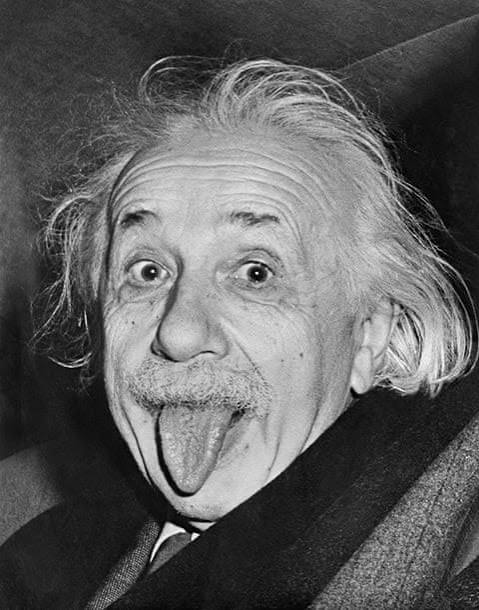
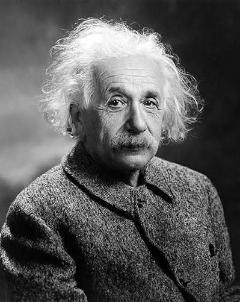
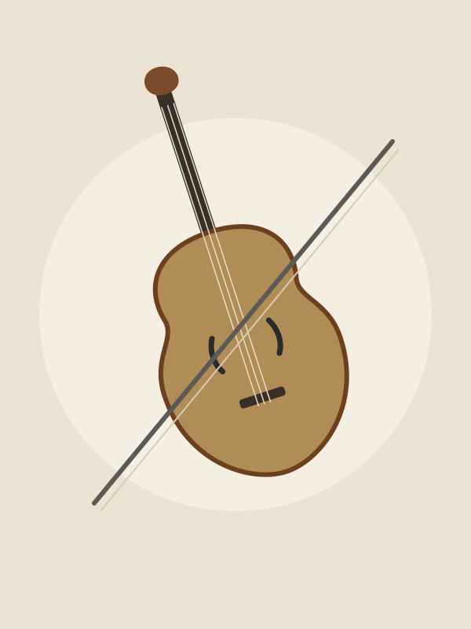
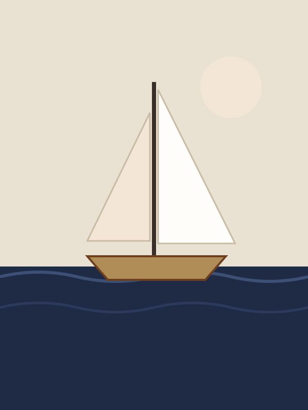
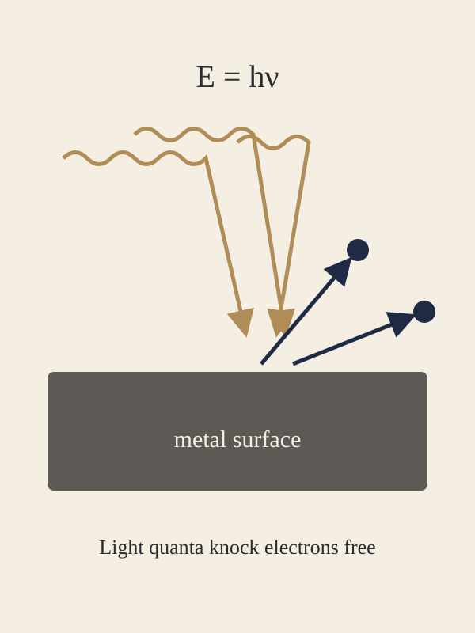

Playing the violin
I started violin lessons as a child and have played all my life. Mozart is my favourite composer.
Hello, I am
I am a theoretical physicist. You may know me from the theories of special and general relativity and the equation E = mc². I also helped lay the foundations of quantum theory, and in 1921 I received the Nobel Prize in Physics for my work on the photoelectric effect.
Explore my publications
My work
I have written hundreds of scientific articles. Here is a selected collection of the papers I am proudest of, including the four papers from my 1905 “miracle year.” For the full list, see my complete bibliography on Wikipedia.
My story
I was born in Ulm, Germany, on 14 March 1879. While I was working as a technical examiner at the Swiss Patent Office in Bern, I published the 1905 papers that changed my life and my field. I earned my doctorate from the University of Zurich in 1906 and later taught as a professor in Zurich, Prague and Berlin.
In 1933 I settled in the United States and joined the Institute for Advanced Study in Princeton, New Jersey. Today I am excited to share physics with a new generation, and this website is my first step.
Away from the blackboard
I started violin lessons as a child and have played all my life. Mozart is my favourite composer.
I love sailing. I kept a small sailboat at my summer house in Caputh, near Berlin.
In Princeton I often walked to and from the Institute with my friend, the logician Kurt Gödel.
My image collection




Blog
Short notes on physics, curiosity and learning. New articles will be added here.
Many of my ideas began with a simple “what if?” question that I then followed carefully to see where it led. When I was sixteen, I wondered what a beam of light would look like if I could travel right beside it. Years later, that question became part of the road to special relativity.
You do not need a laboratory to practise this habit. Pick something ordinary, such as a ball rolling down a slope or a lamp casting a shadow, and ask what would change if one condition changed. Write down your guess before you look up the answer. Being wrong is useful: it shows you exactly which idea needs more thought.
I will add more articles here soon. In future posts I will explain each of my papers in plain language, one at a time.
— A. Einstein